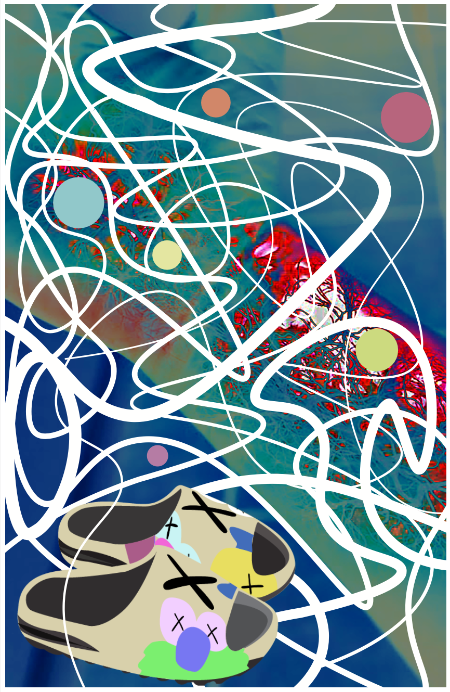
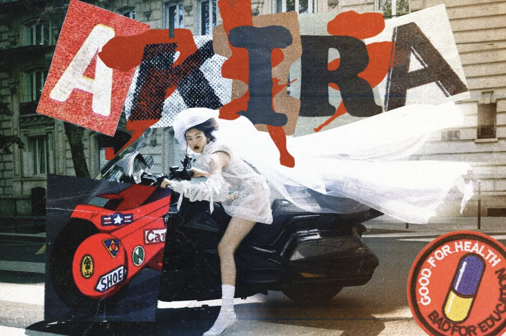

Here are some of my personal favorite designs I've made!
These are from classes for university and 1 is a personal work I made at home during summer break!
Ad redesign I made for Stone Island! I personally loved this one because I felt I encapsulated my style I enjoy doing for this brand which is so different from their original branding so it feels like a collaboration of sorts and came out really fun and different from my other school work.

Poster I made for my alter ego! We had to grab an image and modify it with simple line and circle and made this abstract poster that fit my criteria of words which were hectic and natural matching roots of plants since they seem hectic and busy but are with intention and made naturally.

Akira poster I made from a Vogue China photo I found! THis was something I made for fun over the break and found this image while scrolling on Pinterest and thought it looked cool so I made a poster inspired by the movie Akira and I personally loved out it came out and was able to show a little bit of the design I enjoy creating!